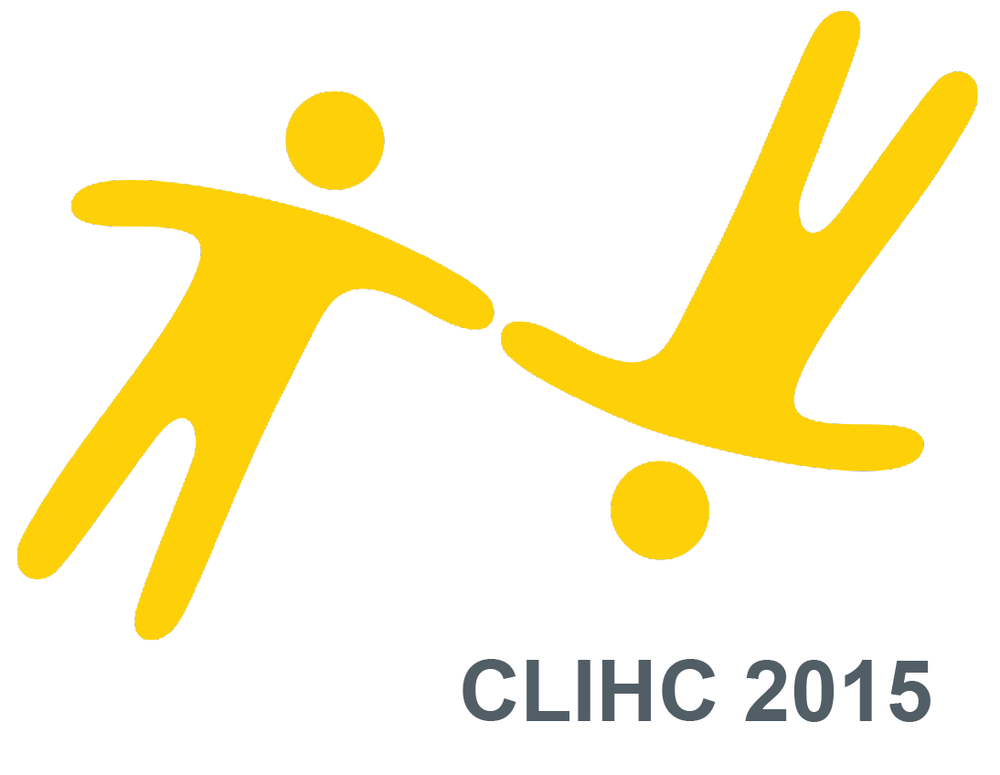

Llamado a propuestas


Diseño de Experiencia de Usuario, Diseño de Interacción e Interacción Persona-Ordenador son términos amplios que han sido utilizados por las vibrantes comunidades profesionales y académicas, a menudo en eventos separados en América Latina. En 2015, hemos decidido unirnos Interaction South America y la Conferencia Latinoamericana sobre Interacción Persona-Ordenador. Durante los días 1 y 2, una pista científica presentará contribuciones seleccionadas por el Congreso Latinoamericano de Interacción Humano-Computadora (CLIHC), mientras que la pista profesional será curada por el Comité Profesional de ISA. Por primera vez en América del Sur, se experimentará la sinergia de ambas comunidades.